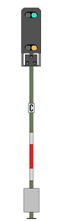

|
|
| You are approaching the Entry Signal of the Altenbeken station. One of Three Signal Aspects are possible: |
 Stop: Stop:
Stop before the Signal and wait for a Proceed indication. If necessary, adjust the Braking Force (Increase Braking Force, Reduce Braking Force) |
 Proceed at Reduced Speed of 40km/h:Continue past the Signal into the station with a maximum speed of 40km/h. This Signal is also has an additional indicator, displaying in this case a "P". This is a Direction display, and indicates that our route goes in the direction of Paderborn. |
 Proceed at
Line Speed (here still 80km/h) Proceed at
Line Speed (here still 80km/h)This Signal is also has an additional indicator, displaying in this case a "P". This is a Direction display, and indicates that our route goes in the direction of Paderborn. |